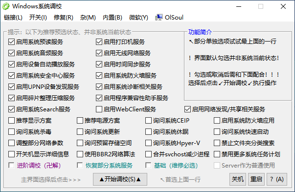

Windows系统调校程序 By OlSoul
由于本程序涉及系统相关项目，杀毒软件可能会出现误报，不信勿用 =。=
把系统自带Defender的"实时保护"和"篡改防护"关闭后再使用
一般玩玩可以尝试最下面的“基础”（选了这个后，再改主界面的别的选项）
不怕死的可以尝试最下面的“进阶调校”（选了这个后，再改主界面的别的选项）
界面中有喜欢的选项，但又不想一键一起修改的，看看顶部选项中是不是有你需要的
适用于：
WindowsXP-11、Server2003-2025、？

下载地址：
蓝奏（j，t，w）GitHub 备用盘